Grand Temple de l'Église Réformée
La mécanique.
La mécanique |
|
|
La mécanique |
|
|
|
- un peigne de vergettes cloué sur le sol de la tribune sous les pompes.
- deux supports d'une barre d'équerres anciennement située en face de la console et cloués sur la grande traverse de charpente du fond de l'instrument.
- une entaille pratiquée dans une planche de support des tournants de la mécanique jeux (côté C).
|
Vue de dessus, de côté et de face du peigne des vergettes de la mécanique de Pédale |
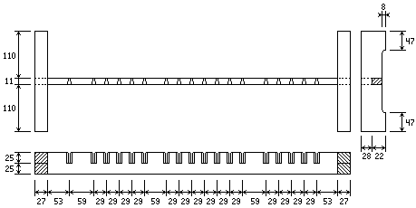 |
|
Peigne des vergettes de la mécanique de Pédale (avant restauration) |
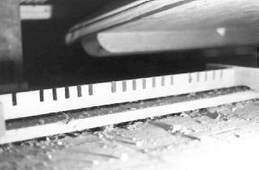 |
|
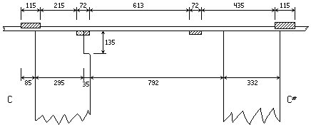
Passage de l'ancienne mécanique de Pédale |
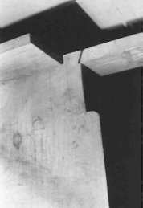 |
C'est tout ! Il ne restait de l'abrégé de Pédale que des morceaux dont Maurice PUGET s'était servi pour poser ses sommiers électro-pneumatiques.
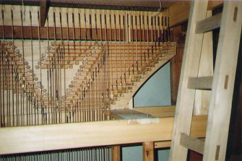
Abrégé du Récit en placeEn 1992, Laurent PLET s'est attaché à restituer avec la plus grande fidélité possible la mécanique, tant de Grand Orgue que de Pédale. Il ajouta celle de Récit, créé de toute pièce à l'instar de tout ce qui concerne ce clavier. Une entorse fut toutefois admise à ce principe d'authenticité et ce, à la demande de la paroisse, propriétaire de l'instrument. En effet, comme il fut décidé de conserver le pédalier de 30 note que Maurice PUGET avait placé en 1960, une tirasse Grand Orgue fut mise en place afin de pouvoir jouer les dessus du pédalier. Les pilotes de cette tirasse sont en laiton (diamètre 3 ou 3.5 mm.) en copie de ceux retrouvés par Théo HAERPFER dans l'orgue (BEAUCOURT et VOEGELI) de Saint Jean de Maurienne.
Un double balancier permet à chaque note de la mécanique de pédale de rattraper l'aplomb (cf. la coupe générale de l'orgue). Ces balanciers sont en chêne, de 8 millimètres d'épaisseur.
L'abrégé de Grand Orgue est assemblé à tenon et mortaise. Ceux de Pédale, de Récit et de tirasse sont fait d'une planche unique ; tous sont en sapin.
Le traçage de la mécanique des abrégés est fait directement sur le bois. Les traits sont fait à la pointe à tracer du côté des sommiers, au crayon rouge du côté des claviers et au crayon noir pour figurer l'axe des rouleaux.
Toutes les notes sont inscrites :
- à la division du sommier
- à la division du clavier
- sur chaque croisement d'axes
- L'épaisseur du cadre de l'abrégé de Grand Orgue est de 27 mm.
- Les rouleaux sont en pin de section variable selon leur longueur.
- Tous les bras des rouleaux sont en hêtre et sont percés de deux trous.
Les crapaudines sont en hêtre et sont conçues de façon inhabituelle : en effet, plutôt que de les garnir d'écrous de cuir comme c'est souvent le cas dans la facture classique, BEAUCOURT et VOEGELI préférèrent poser au travers de chaque crapaudine une petite tige filetée en laiton, vissable d'un côté et légèrement percée de l'autre. La pointe (en fer doux) de chaque extrémité des rouleaux d'abrégé vient donc reposer à l'intérieur des cavités de ces petite tiges ; le système est réglable, facile à faire, démontable, inusable et ne fait pas de bruit !
|
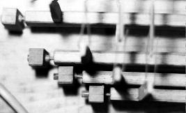
Crapaudines avec leur vis de réglage |
||||
|
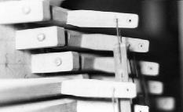
Bras d'abrégé |
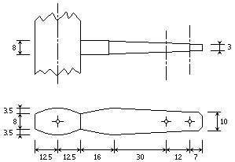 Vue de côté et de dessus d'un bras d'abrégé |
| 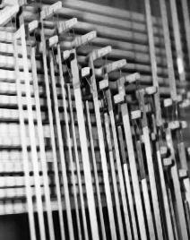 |
La section des vergettes est de 11 × 2 mm. Les vergettes sont en sapin finies par du papier bleu, collé sur leur extrémité afin de réduire l'éclatement du bois. Les crochets (diamètre 1.2 mm.) comme les tiges filetées (diamètre 1.8 mm.) sont en laiton. Les vergettes de la console (diamètre 1.8 mm.) sont en laiton. Les écrous sont en tilleul, de forme hexagonale, reconstitués d'après les instruments BEAUCOURT et VOEGELI que Laurent PLET a étudié lors de la restauration de 1992. |
En 1960, les deux barres d'équerres originelle furent tronquée par Maurice PUGET de la même manière que les crapaudines de l'abrégé. Aussi Laurent PLET a-t-il dû les reconstituer. Elles sont en hêtre (38 × 48 mm.) avec une rainure portant une baguette de chêne (35 × 11 mm.). Cette baguette porte les denticules séparant les équerres. Un trait de scie longitudinal permet de loger l'axe en laiton (diamètre 2 mm.) retenu en place par des coins de chêne collés.
| 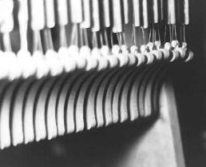 | 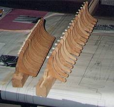 | |
|
Les équerres sont faites en bois plein (hêtre), de 7 millimètres d'épaisseur, arrondies sur l'hypoténuse du triangle formé, et possèdent sur leurs champs, ou un piton vissé, ou une petite mortaise destinée à recevoir une tige filetée. Chaque piton est recouvert d'une garniture de peau blanche collée et découpée autour du crochet afin de limiter le bruit de la mécanique. |
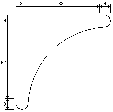 Plan d'une équerre. |